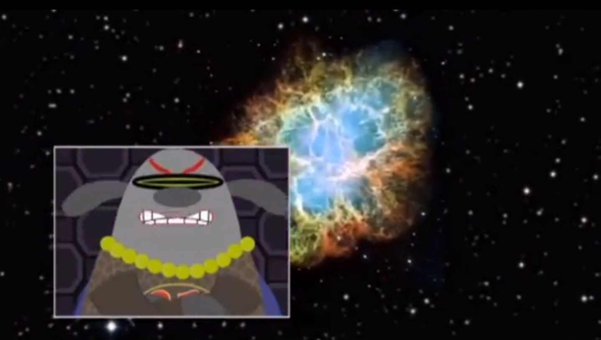

Part game show, part reality TV, and part spoof, Fetch! with Ruff Ruffman features real kids, real challenges, and real science. The challenge in this episode is to find an evil villain named Gamma Ray Person who is out to destroy all life on Earth using Gamma Rays. As the episode progresses, the SuperFETCHERs learn about the electromagnetic spectrum from Prof. Goodman, and using WorldWide Telescope, they uncover the identity of the evil villain.